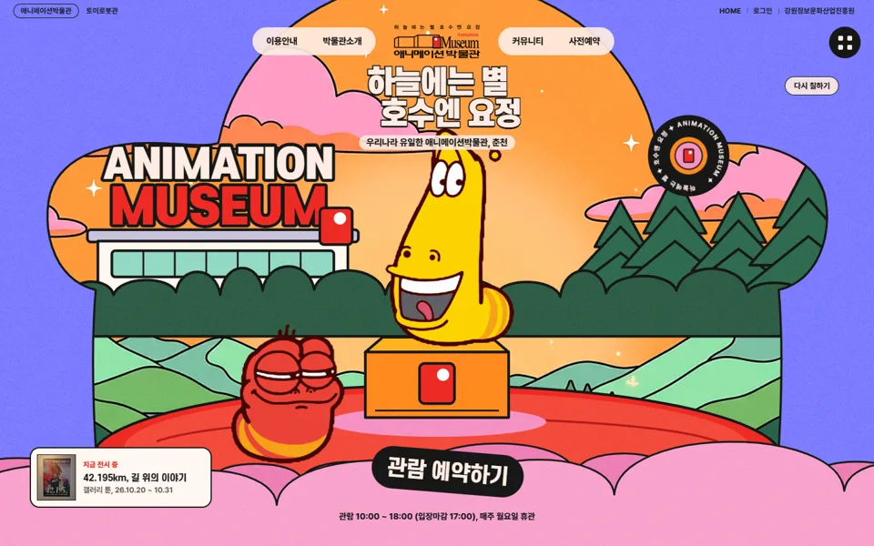
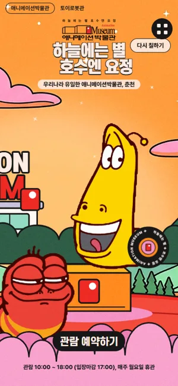

시안 1
색을 칠하면 그림이 살아나요
Ponpon Mania+Captain Goosebumps
- Ponpon Mania에서
- 해와 구름 모양 액자 안의 첫 화면, 무대 위 큰 캐릭터, 검은 알약 버튼, 앨범 표지를 넘기는 전시 공간과 재생 바
- Captain Goosebumps에서
- 회색 세상에 색을 되찾아 주는 놀이. 색종이를 겹친 시작 카드, 칠한 만큼 올라가는 숫자, 아래쪽 조작 안내
- 해 보세요
- ‘색칠 시작’을 누르거나 그림을 문지르면 선만 남은 박물관에 색이 칠해지고, 다 칠하면 라바가 움직입니다. 아래 앨범 표지도 넘길 때마다 색이 칠해집니다.